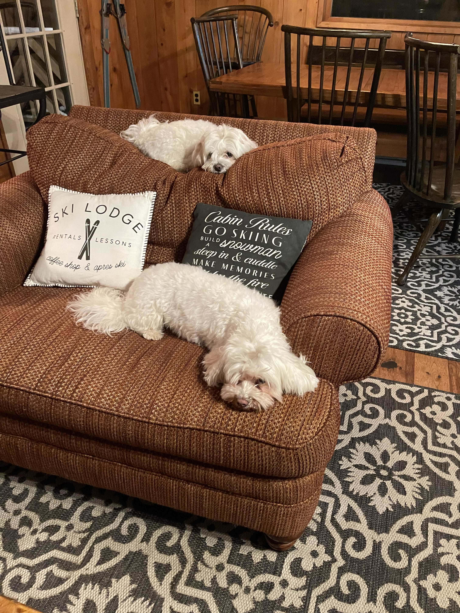

Home

Mani and Siri in Winter Fairy Tale
- Personal Background: I grew up in Eastern Europe. When I was 17 years old, I moved to
Lithuania to complete my first education. After that I moved to Germany to get my second degree in
Business Administration. Then I ended up in the US and have lived in CLT for the past six years.
- Professional Background:I am working full time in the IT industry.
- Academic Background:I have a degree in Cultural Heritage and Tourism as well as
Business Administration.
- Background in this Subject:I have some background in JavaScript.
- Primary Computer Platform:Working on Windows and Mac machines
- Courses I'm Taking & Why
- ITIS3135 - Web app design and Development.
- ITIS3130 - Human Centered Design.
- Graduation:2025
- Funny/Interesting Item to Remember me by:I fluently speak three languages( german,
russian and english).